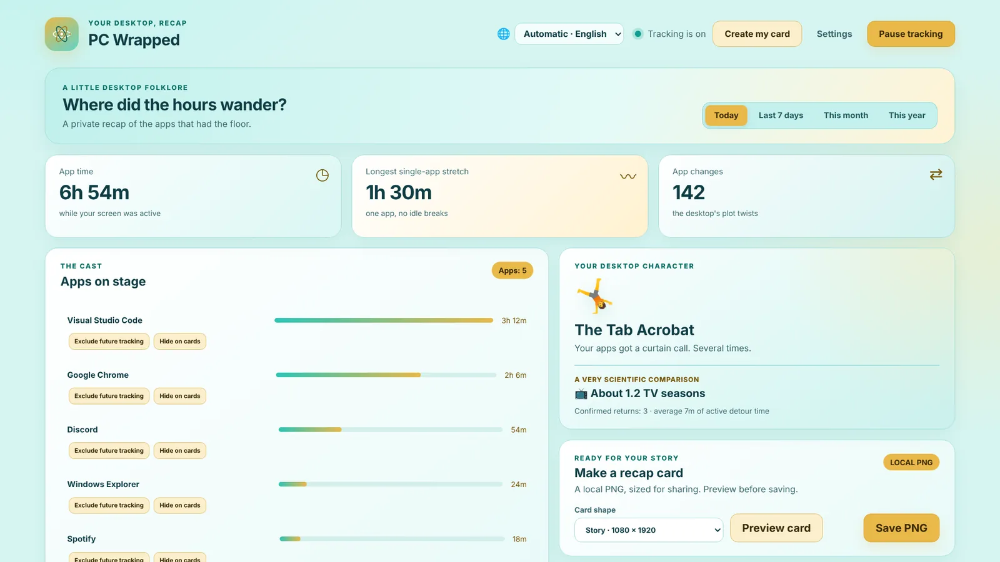
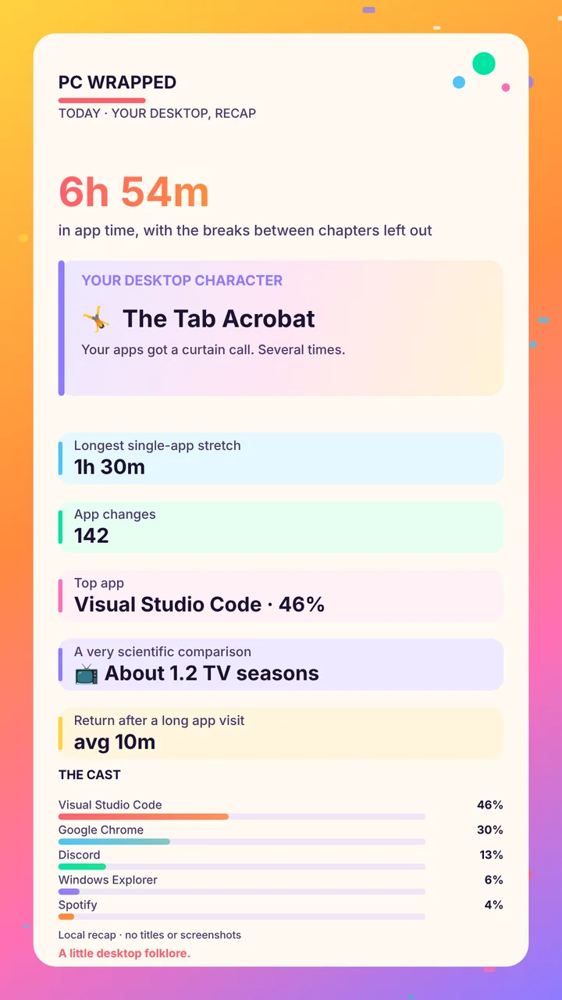
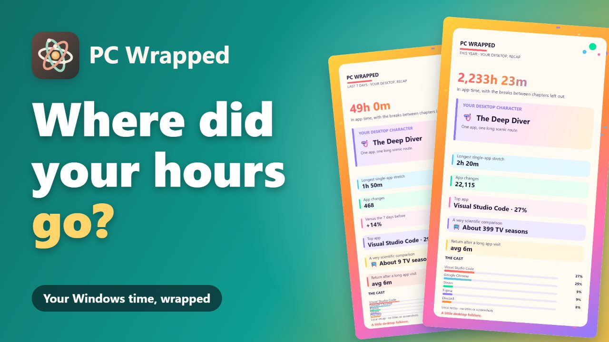
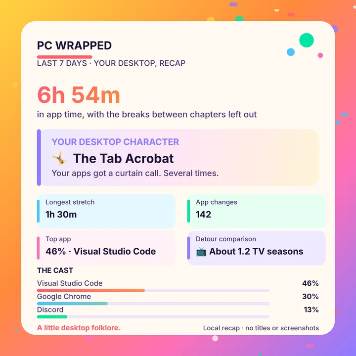
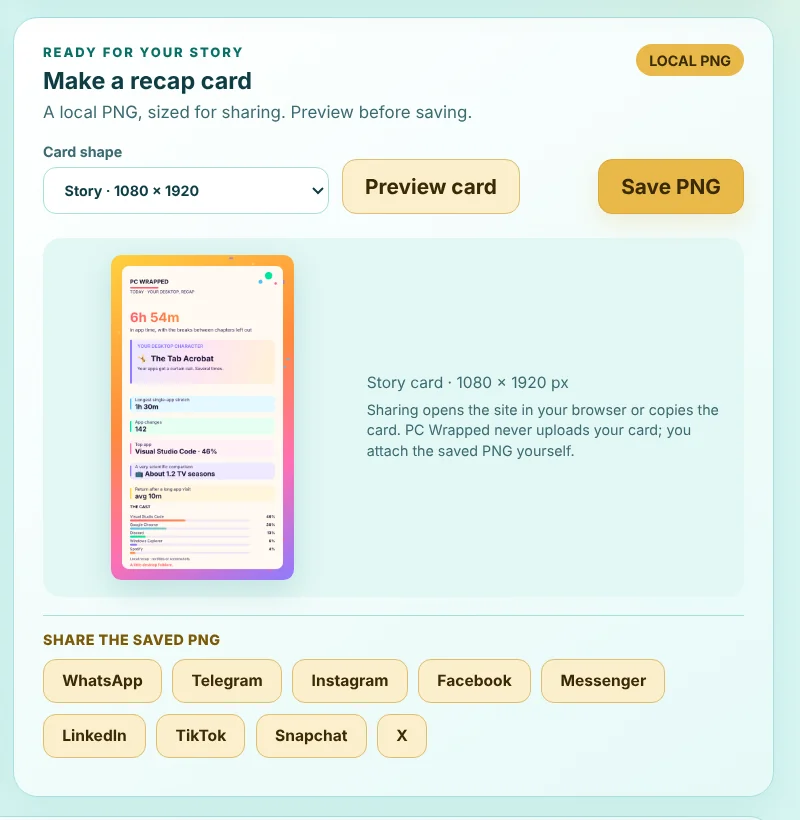
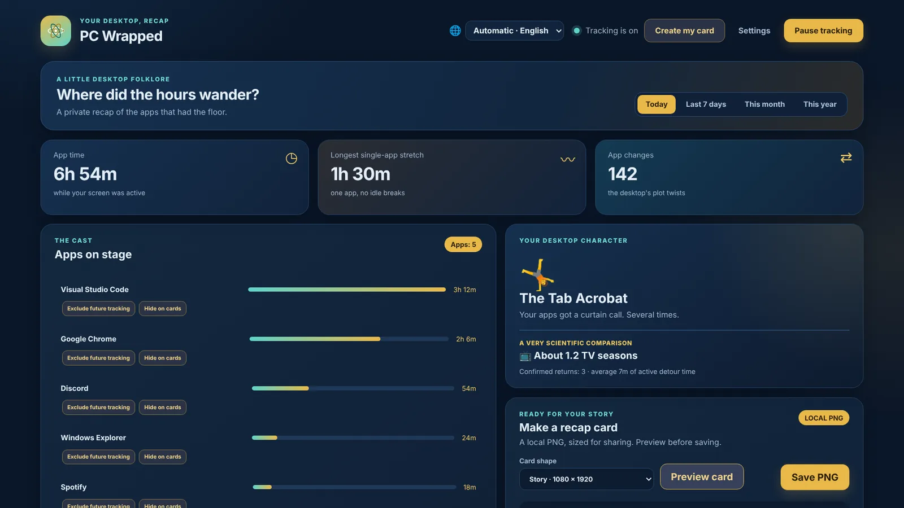

Start tracking when you like
Tracking is off until you turn it on. PC Wrapped then notes which app is in front and when the PC is idle — nothing more.
A private Windows app · version 1.3
PC Wrapped turns your desktop time into a small, friendly story: a private recap of the apps that had the floor. No productivity score, no account, nothing uploaded.
Free · Windows 10 and 11 · tracking starts only when you choose


A small window into the day
Start when you want a recap. Pause whenever you want your desktop to yourself.
Tracking is off until you turn it on. PC Wrapped then notes which app is in front and when the PC is idle — nothing more.
Today, the last 7 days, this month or this year: app time, your longest single-app stretch, app changes and your top apps.
Save a story or square card as a PNG. Facebook, Instagram and friends open with the card ready to paste.
See it in action
Today, the week, the month and the year, the story cards, privacy and all 35 languages, in 2 minutes 24 seconds.

Watch on YouTube · 2:24
Ready for your story
Every recap becomes a bright card in story (1080 × 1920) or square (1080 × 1080) size, drawn on your PC.

Share in one click
Press Facebook, Instagram, Messenger, TikTok or Snapchat and PC Wrapped copies the card and opens the site for you — just press Ctrl+V. WhatsApp, Telegram, LinkedIn and X open with a short caption.
PC Wrapped never uploads your card. You decide where it goes.

Gentle on the eyes
Pick a theme or let PC Wrapped follow Windows. Arabic and Hebrew are laid out right to left.
New in version 1.3
PC Wrapped reads your Windows display language the first time it opens and uses it. You can switch from the top bar anytime.
Every full Windows display language, picked automatically.
A calmer evening look, or follow your Windows theme.
Full-screen time counts even with a controller, never while the PC is locked.
Last 7 days against the 7 before, this month against the same days last month.
العربية · Български · Čeština · Dansk · Deutsch · Ελληνικά · English · Español · Eesti · Suomi · Français · עברית · Hrvatski · Magyar · Italiano · 日本語 · 한국어 · Lietuvių · Latviešu · Norsk bokmål · Nederlands · Polski · Português (Brasil) · Português (Portugal) · Română · Русский · Slovenčina · Slovenščina · Srpski · Svenska · ไทย · Türkçe · Українська · 简体中文 · 繁體中文
Private by design
PC Wrapped makes a recap without keeping a diary of what you do. It stores app-level totals locally and leaves your work alone.
Read the privacy details →Local totals onlyDaily app totals stay on this PC for up to 365 days.
No peeking at your workNo window titles, websites, screenshots, keystrokes or document contents.
No account, no serverNothing is sent anywhere. There is no PC Wrapped server to send it to.
Yours to take awayExport every saved day as CSV, or delete all history from Settings.
Good to know
No. It summarizes active time by app with playful language. It doesn't measure attention, intent or whether time was well spent.
While tracking is on: which app is in the foreground and whether the PC is idle, saved as daily totals per app. It never reads window titles or browser addresses.
The first of your Windows display languages that it supports — 35 in total. Change it any time from the language picker in the top bar.
No. The PNG is saved on your PC. A share button copies it or opens the site with a short caption; you choose whether to post anything.
Yes. Pause from the app or the tray, exclude apps, hide names on cards, or delete all history in Settings.
Made for Windows
Free in the Microsoft Store for Windows 10 and 11.